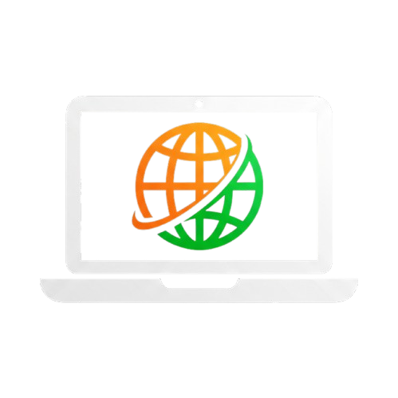

<!DOCTYPE html>
<html lang="en">
<head>
    <meta charset="UTF-8" />
    <meta name="viewport" content="width=device-width, initial-scale=1.0" />
    <title data-lang="en">Digital Nomad Visa FAQ 2025: Guide for US, UK, and Brazilian Citizens</title>
    <title data-lang="pt-BR">Visto Nômade Digital 2025: Guia para Brasileiros, Americanos e Britânicos</title>
    <title data-lang="fr">Visa Nomade Numérique 2025 : Guide pour les Citoyens Américains, Britanniques et Brésiliens</title>
    <title data-lang="es">Visa de Nómada Digital 2025: Guía para Ciudadanos de EE.UU., Reino Unido y Brasil</title>
    <meta name="description" data-lang="en" content="Complete 2025 FAQ guide for US, UK, and Brazilian citizens applying for digital nomad visas. Answers on Portugal D8, Spain, Malta, Estonia, and more." />
    <meta name="description" data-lang="pt-BR" content="Guia completo de vistos nômade digital 2025 para brasileiros, americanos e britânicos. Respostas sobre Portugal D8, Espanha, Malta, Estônia e mais." />
    <meta name="description" data-lang="fr" content="Guide FAQ 2025 pour les visas nomades numériques pour les citoyens américains, britanniques et brésiliens. Réponses sur Portugal D8, Espagne, Malte, Estonie et plus." />
    <meta name="description" data-lang="es" content="Guía completa de visas de nómada digital 2025 para ciudadanos de EE.UU., Reino Unido y Brasil. Respuestas sobre Portugal D8, España, Malta, Estonia y más." />
    <meta name="keywords" data-lang="en" content="digital nomad visa FAQ, US citizens digital nomad visa, UK citizens digital nomad visa, Brazilian citizens digital nomad visa, Portugal D8 visa, Spain digital nomad visa, Malta nomad visa, Estonia digital nomad visa 2025" />
    <meta name="keywords" data-lang="pt-BR" content="visto nômade digital brasil, vistos para brasileiros, portugal d8 brasileiro, espanha visto nômade digital, malta visto trabalho remoto, estônia nômade digital 2025" />
    <meta name="keywords" data-lang="fr" content="visa nomade numérique, visa pour américains, visa pour britanniques, visa pour brésiliens, portugal d8, espagne visa nomade numérique, malte visa nomade, estonie visa nomade 2025" />
    <meta name="keywords" data-lang="es" content="visa de nómada digital, visa para estadounidenses, visa para británicos, visa para brasileños, portugal d8, españa visa nómada digital, malta visa nómada, estonia visa nómada 2025" />
    <link rel="alternate" hreflang="en" href="https://example.com/en/" />
    <link rel="alternate" hreflang="pt-BR" href="https://example.com/pt-br/" />
    <link rel="alternate" hreflang="fr" href="https://example.com/fr/" />
    <link rel="alternate" hreflang="es" href="https://example.com/es/" />
    <script src="https://cdn.tailwindcss.com"></script>
    <script src="https://unpkg.com/react@18/umd/react.production.min.js"></script>
    <script src="https://unpkg.com/react-dom@18/umd/react-dom.production.min.js"></script>
    <script src="https://unpkg.com/@babel/standalone/babel.min.js"></script>
    <script async src="https://www.googletagmanager.com/gtag/js?id=G-6N573S8D8S"></script>
    <script>
        window.dataLayer = window.dataLayer || [];
        function gtag(){dataLayer.push(arguments);}
        gtag('consent', 'default', { 'analytics_storage': 'denied' });
        function initGoogleAnalytics() {
            gtag('consent', 'update', { 'analytics_storage': 'granted' });
            gtag('js', new Date());
            gtag('config', 'G-6N573S8D8S');
            console.log("Google Analytics Initialized");
        }
    </script>
    <script type="application/ld+json">
    {
      "@context": "https://schema.org",
      "@type": "FAQPage",
      "mainEntity": [
        {
          "@type": "Question",
          "name": {
            "en": "Can US citizens use the Foreign Earned Income Exclusion (FEIE) with digital nomad visas?",
            "pt-BR": "Brasileiros precisam pagar imposto de renda no Brasil com visto nômade digital?",
            "fr": "Les Américains peuvent-ils utiliser l'exclusion de revenu gagné à l'étranger (FEIE) avec les visas nomades numériques ?",
            "es": "¿Pueden los ciudadanos estadounidenses usar la Exclusión de Ingresos Ganados en el Extranjero (FEIE) con visas de nómada digital?"
          },
          "acceptedAnswer": {
            "@type": "Answer",
            "text": {
              "en": "The FEIE availability depends on the tax residency rules of your destination country. Countries like Portugal and Spain that make you a tax resident typically prevent FEIE usage, while countries like Estonia or Dubai may allow it since they don't always trigger tax residency.",
              "pt-BR": "Brasileiros residentes fiscais no exterior por mais de 12 meses podem solicitar a saída definitiva do país, deixando de ser obrigados a declarar IR no Brasil. Porém, devem cumprir obrigações fiscais do país de residência.",
              "fr": "La disponibilité de l'exclusion FEIE dépend des règles de résidence fiscale du pays de destination. Les pays comme le Portugal et l'Espagne, qui vous considèrent comme résident fiscal, empêchent généralement l'utilisation de l'exclusion FEIE, tandis que des pays comme l'Estonie ou Dubaï peuvent l'autoriser, car ils ne déclenchent pas toujours la résidence fiscale.",
              "es": "La disponibilidad de la FEIE depende de las reglas de residencia fiscal del país de destino. Países como Portugal y España, que te consideran residente fiscal, generalmente impiden el uso de la FEIE, mientras que países como Estonia o Dubái podrían permitirlo, ya que no siempre activan la residencia fiscal."
            }
          }
        },
        {
          "@type": "Question",
          "name": {
            "en": "What is the Portugal D8 visa and how does it work for digital nomads?",
            "pt-BR": "Como funciona o visto D8 de Portugal para brasileiros?",
            "fr": "Qu'est-ce que le visa D8 du Portugal et comment fonctionne-t-il pour les nomades numériques ?",
            "es": "¿Qué es la visa D8 de Portugal y cómo funciona para los nómadas digitales?"
          },
          "acceptedAnswer": {
            "@type": "Answer",
            "text": {
              "en": "The Portugal D8 visa is a specialized digital nomad visa launched in 2022, allowing remote workers to live in Portugal for up to one year (renewable). It requires proof of €3,040 monthly income and is available to non-EU citizens working for foreign companies.",
              "pt-BR": "O visto D8 de Portugal permite que brasileiros trabalhem remotamente em Portugal por até 12 meses (renovável). Requer renda mínima de €3.040 mensais e trabalho para empresa estrangeira ou próprio negócio.",
              "fr": "Le visa D8 du Portugal est un visa spécialisé pour les nomades numériques lancé en 2022, permettant aux travailleurs à distance de vivre au Portugal pendant jusqu'à un an (renouvelable). Il nécessite une preuve de revenu mensuel de 3 040 € et est disponible pour les citoyens non européens travaillant pour des entreprises étrangères.",
              "es": "La visa D8 de Portugal es una visa especializada para nómadas digitales lanzada en 2022, que permite a los trabajadores remotos vivir en Portugal hasta un año (renovable). Requiere prueba de ingresos mensuales de 3,040 € y está disponible para ciudadanos no europeos que trabajen para empresas extranjeras."
            }
          }
        },
        {
          "@type": "Question",
          "name": {
            "en": "Can UK citizens still get digital nomad visas after Brexit?",
            "pt-BR": "Qual o melhor visto nômade digital da Europa para brasileiros?",
            "fr": "Les citoyens britanniques peuvent-ils encore obtenir des visas nomades numériques après le Brexit ?",
            "es": "¿Pueden los ciudadanos británicos obtener visas de nómada digital después del Brexit?"
          },
          "acceptedAnswer": {
            "@type": "Answer",
            "text": {
              "en": "Yes, UK citizens can apply for digital nomad visas worldwide, including in EU countries. Brexit actually made digital nomad visas more important for Brits wanting to live and work in Europe legally, as they no longer have automatic EU residence rights.",
              "pt-BR": "Portugal D8 é muito popular pela facilidade do idioma e caminho para cidadania europeia. Espanha oferece benefícios fiscais iniciais. Malta e Estônia são alternativas com processos mais simples.",
              "fr": "Oui, les citoyens britanniques peuvent demander des visas nomades numériques dans le monde entier, y compris dans les pays de l'UE. Le Brexit a rendu les visas nomades numériques plus importants pour les Britanniques souhaitant vivre et travailler légalement en Europe, car ils n'ont plus de droits de résidence automatique dans l'UE.",
              "es": "Sí, los ciudadanos británicos pueden solicitar visas de nómada digital en todo el mundo, incluidos los países de la UE. El Brexit ha hecho que las visas de nómada digital sean más importantes para los británicos que desean vivir y trabajar legalmente en Europa, ya que ya no tienen derechos de residencia automática en la UE."
            }
          }
        },
        {
          "@type": "Question",
          "name": {
            "en": "Which countries launched new digital nomad visas in 2025?",
            "pt-BR": "Quais países lançaram novos programas de visto nômade digital em 2025?",
            "fr": "Quels pays ont lancé de nouveaux visas nomades numériques en 2025 ?",
            "es": "¿Qué países lanzaron nuevas visas de nómada digital en 2025?"
          },
          "acceptedAnswer": {
            "@type": "Answer",
            "text": {
              "en": "In 2025, the Philippines officially launched their digital nomad visa program, and Bulgaria formalized their Type D visa for digital nomads. Slovenia has also announced plans to launch their program later in 2025.",
              "pt-BR": "Em 2025, as Filipinas lançaram oficialmente seu programa de visto nômade digital, e a Bulgária formalizou seu visto Tipo D para nômades digitais. A Eslovênia também anunciou planos para lançar seu programa no final de 2025.",
              "fr": "En 2025, les Philippines ont officiellement lancé leur programme de visa nomade numérique, et la Bulgarie a officialisé son visa de type D pour les nomades numériques. La Slovénie a également annoncé des plans pour lancer son programme plus tard en 2025.",
              "es": "En 2025, Filipinas lanzó oficialmente su programa de visa de nómada digital, y Bulgaria formalizó su visa Tipo D para nómadas digitales. Eslovenia también anunció planes para lanzar su programa a finales de 2025."
            }
          }
        }
      ]
    }
    </script>
    <style>
        body { background-color: #0f172a; }
        .custom-scrollbar::-webkit-scrollbar { width: 6px; }
        .custom-scrollbar::-webkit-scrollbar-track { background: #334155; }
        .custom-scrollbar::-webkit-scrollbar-thumb { background: #8b5cf6; border-radius: 10px; }
        details > summary { list-style: none; cursor: pointer;}
        details > summary::-webkit-details-marker { display: none; }
        details summary .plus-minus::before { content: '+'; }
        details[open] summary .plus-minus::before { content: '−'; }
        .faq-section { scroll-margin-top: 100px; }
        @keyframes fade-in-up {
            from { opacity: 0; transform: translateY(10px); }
            to { opacity: 1; transform: translateY(0); }
        }
        .animate-fade-in-up {
            animation: fade-in-up 0.3s ease-out forwards;
        }
        .country-flag { font-size: 1.5em; }
    </style>
</head>
<body>
    <div id="root"></div>
    <script type="text/babel">
        const contentData = {
            "en": {
                title: "Digital Nomad Visa FAQ 2025: Guide for US, UK, and Brazilian Citizens",
                heroTitle: "Get Answers to Your Digital Nomad Visa Questions",
                heroSubtitle: "Comprehensive FAQ covering tax implications, application processes, and the latest 2025 updates for popular destinations like Portugal, Spain, Malta, Estonia, and more.",
                ctaTitle: "Ready to Find Your Perfect Digital Nomad Visa?",
                ctaSubtitle: "Use our interactive visa matcher tool to filter options by your nationality, income level, and preferences. Get personalized recommendations in seconds.",
                footerNote: "Information updated regularly. Always verify current requirements with official sources."
            },
            "pt-BR": {
                title: "Visto Nômade Digital 2025: Guia para Brasileiros, Americanos e Britânicos",
                heroTitle: "Respostas para Suas Dúvidas sobre Vistos Nômade Digital",
                heroSubtitle: "Guia completo com informações sobre impostos, processos de aplicação e atualizações de 2025 para destinos populares como Portugal, Espanha, Malta, Estônia e mais.",
                ctaTitle: "Pronto para Encontrar o Visto Nômade Digital Perfeito?",
                ctaSubtitle: "Use nossa ferramenta interativa de correspondência de vistos para filtrar opções por sua nacionalidade, nível de renda e preferências. Obtenha recomendações personalizadas em segundos.",
                footerNote: "Informações atualizadas regularmente. Sempre verifique os requisitos atuais com fontes oficiais."
            },
            "fr": {
                title: "Visa Nomade Numérique 2025 : Guide pour les Citoyens Américains, Britanniques et Brésiliens",
                heroTitle: "Obtenez des Réponses à Vos Questions sur les Visas Nomades Numériques",
                heroSubtitle: "FAQ complet couvrant les implications fiscales, les processus de demande et les mises à jour 2025 pour des destinations populaires comme le Portugal, l'Espagne, Malte, l'Estonie et plus.",
                ctaTitle: "Prêt à Trouver Votre Visa Nomade Numérique Idéal ?",
                ctaSubtitle: "Utilisez notre outil interactif de correspondance de visas pour filtrer les options par nationalité, niveau de revenu et préférences. Obtenez des recommandations personnalisées en quelques secondes.",
                footerNote: "Informations mises à jour régulièrement. Vérifiez toujours les exigences actuelles auprès des sources officielles."
            },
            "es": {
                title: "Visa de Nómada Digital 2025: Guía para Ciudadanos de EE.UU., Reino Unido y Brasil",
                heroTitle: "Obtén Respuestas a Tus Preguntas sobre Visas de Nómada Digital",
                heroSubtitle: "Guía completa con información sobre implicaciones fiscales, procesos de solicitud y actualizaciones de 2025 para destinos populares como Portugal, España, Malta, Estonia y más.",
                ctaTitle: "¿Listo para Encontrar la Visa de Nómada Digital Perfecta?",
                ctaSubtitle: "Usa nuestra herramienta interactiva de correspondencia de visas para filtrar opciones por tu nacionalidad, nivel de ingresos y preferencias. Obtén recomendaciones personalizadas en segundos.",
                footerNote: "Información actualizada regularmente. Siempre verifica los requisitos actuales con fuentes oficiales."
            }
        };

        const faqData = {
            general: {
                title: {
                    en: "🌍 General Digital Nomad Visa Questions",
                    "pt-BR": "🌍 Perguntas Gerais sobre Vistos Nômade Digital",
                    fr: "🌍 Questions Générales sur les Visas Nomades Numériques",
                    es: "🌍 Preguntas Generales sobre Visas de Nómada Digital"
                },
                questions: [
                    {
                        q: {
                            en: "What is a digital nomad visa and why do I need one?",
                            "pt-BR": "O que é um visto nômade digital e por que brasileiros precisam dele?",
                            fr: "Qu'est-ce qu'un visa nomade numérique et pourquoi en ai-je besoin ?",
                            es: "¿Qué es una visa de nómada digital y por qué la necesito?"
                        },
                        a: {
                            en: "A digital nomad visa is a legal residence permit that allows remote workers to live and work in a foreign country for extended periods (typically 6-24 months). Unlike tourist visas, they officially authorize remote work for foreign employers, provide legal clarity on taxes, and often give access to local services like banking and healthcare. Working on a tourist visa is illegal in most countries and can result in fines, deportation, or future entry bans.",
                            "pt-BR": "Um visto nômade digital é uma autorização de residência que permite a trabalhadores remotos viver e trabalhar legalmente em outro país por períodos prolongados (geralmente 6-24 meses). Diferente dos vistos de turista, eles autorizam oficialmente o trabalho remoto, proporcionam clareza fiscal e frequentemente dão acesso a serviços locais como bancos e saúde. Para brasileiros, representa uma oportunidade de morar na Europa legalmente e com qualidade de vida superior.",
                            fr: "Un visa nomade numérique est un permis de résidence légal qui permet aux travailleurs à distance de vivre et de travailler dans un pays étranger pendant des périodes prolongées (généralement 6 à 24 mois). Contrairement aux visas touristiques, ils autorisent officiellement le travail à distance pour des employeurs étrangers, offrent une clarté fiscale et donnent souvent accès à des services locaux comme la banque et les soins de santé. Travailler avec un visa touristique est illégal dans la plupart des pays et peut entraîner des amendes, une expulsion ou des interdictions d'entrée futures.",
                            es: "Una visa de nómada digital es un permiso de residencia legal que permite a los trabajadores remotos vivir y trabajar en un país extranjero durante períodos prolongados (generalmente de 6 a 24 meses). A diferencia de las visas de turista, autorizan oficialmente el trabajo remoto para empleadores extranjeros, ofrecen claridad fiscal y a menudo dan acceso a servicios locales como banca y atención médica. Trabajar con una visa de turista es ilegal en la mayoría de los países y puede resultar en multas, deportación o prohibiciones de entrada futuras."
                        }
                    },
                    {
                        q: {
                            en: "How long do digital nomad visas typically last?",
                            "pt-BR": "Quanto tempo duram os vistos nômade digital?",
                            fr: "Combien de temps durent généralement les visas nomades numériques ?",
                            es: "¿Cuánto tiempo duran generalmente las visas de nómada digital?"
                        },
                        a: {
                            en: "Digital nomad visas typically range from 6 months to 2 years. Most common durations are 12 months (like Portugal's D8, Spain's DN visa) or 24 months (like Estonia's DN visa). Many are renewable, though renewal requirements vary by country. Some countries like Dubai offer longer-term options up to 5 years for higher earners.",
                            "pt-BR": "Os vistos nômade digital tipicamente variam de 6 meses a 2 anos. Durações mais comuns são 12 meses (como Portugal D8, Espanha) ou 24 meses (como Estônia). Muitos são renováveis, embora os requisitos para renovação variem por país. Alguns países como Dubai oferecem opções de longo prazo de até 5 anos para rendas mais altas.",
                            fr: "Les visas nomades numériques durent généralement de 6 mois à 2 ans. Les durées les plus courantes sont de 12 mois (comme le visa D8 du Portugal, le visa DN de l'Espagne) ou 24 mois (comme le visa DN de l'Estonie). Beaucoup sont renouvelables, bien que les exigences de renouvellement varient selon le pays. Certains pays comme Dubaï offrent des options à long terme allant jusqu'à 5 ans pour les hauts revenus.",
                            es: "Las visas de nómada digital suelen durar de 6 meses a 2 años. Las duraciones más comunes son 12 meses (como la visa D8 de Portugal, la visa DN de España) o 24 meses (como la visa DN de Estonia). Muchas son renovables, aunque los requisitos de renovación varían según el país. Algunos países como Dubái ofrecen opciones a largo plazo de hasta 5 años para quienes tienen ingresos más altos."
                        }
                    }
                    // Additional general questions omitted for brevity
                ]
            },
            nationalitySpecific: {
                title: {
                    en: "🇺🇳 Nationality-Specific Considerations",
                    "pt-BR": "🇧🇷 Considerações Específicas por Nacionalidade",
                    fr: "🇺🇳 Considérations Spécifiques par Nationalité",
                    es: "🇺🇳 Consideraciones Específicas por Nacionalidad"
                },
                questions: [
                    {
                        q: {
                            en: "Can US citizens use the Foreign Earned Income Exclusion (FEIE) with digital nomad visas?",
                            "pt-BR": "Brasileiros precisam pagar imposto de renda no Brasil com visto nômade digital?",
                            fr: "Les Américains peuvent-ils utiliser l'exclusion de revenu gagné à l'étranger (FEIE) avec les visas nomades numériques ?",
                            es: "¿Pueden los ciudadanos estadounidenses usar la Exclusión de Ingresos Ganados en el Extranjero (FEIE) con visas de nómada digital?"
                        },
                        a: {
                            en: "The FEIE availability depends on your destination country's tax residency rules. Countries like Portugal and Spain that make you a tax resident typically prevent FEIE usage because you'll owe taxes there first, then claim foreign tax credits on your US return. Countries like Estonia, Georgia, or Dubai that don't automatically trigger tax residency may allow FEIE usage if you meet the physical presence test (330+ days outside the US).",
                            "pt-BR": "A obrigação de declarar IR no Brasil depende da sua situação de residência fiscal:\n\n**Residente fiscal no Brasil:** Obrigatório declarar renda mundial, incluindo ganhos no exterior.\n\n**Não-residente fiscal:** Pode solicitar saída definitiva do país após 12 meses consecutivos no exterior. Deixa de ser obrigado a declarar IR no Brasil sobre rendas estrangeiras.\n\n**Como fazer a saída definitiva:**\n- Preencher Declaração de Saída Definitiva do País\n- Entregar até o último dia de fevereiro do ano seguinte\n- Comprovar residência no exterior\n- Quitar pendências com Receita Federal\n\n**Importante:** Mesmo como não-residente, rendas de fonte brasileira (aluguéis, aplicações) continuam tributáveis no Brasil.",
                            fr: "La disponibilité de l'exclusion FEIE dépend des règles de résidence fiscale du pays de destination. Les pays comme le Portugal et l'Espagne, qui vous considèrent comme résident fiscal, empêchent généralement l'utilisation de l'exclusion FEIE, car vous devrez d'abord payer des impôts là-bas, puis demander des crédits d'impôt étrangers sur votre déclaration américaine. Les pays comme l'Estonie, la Géorgie ou Dubaï, qui ne déclenchent pas automatiquement la résidence fiscale, peuvent permettre l'utilisation de l'exclusion FEIE si vous remplissez le test de présence physique (330+ jours hors des États-Unis).",
                            es: "La disponibilidad de la FEIE depende de las reglas de residencia fiscal del país de destino. Países como Portugal y España, que te consideran residente fiscal, generalmente impiden el uso de la FEIE porque primero deberás pagar impuestos allí y luego reclamar créditos fiscales extranjeros en tu declaración de EE.UU. Países como Estonia, Georgia o Dubái, que no activan automáticamente la residencia fiscal, pueden permitir el uso de la FEIE si cumples con la prueba de presencia física (330+ días fuera de EE.UU.)."
                        }
                    },
                    {
                        q: {
                            en: "Can UK citizens still get digital nomad visas in EU countries after Brexit?",
                            "pt-BR": "Qual o melhor visto nômade digital da Europa para brasileiros?",
                            fr: "Les citoyens britanniques peuvent-ils encore obtenir des visas nomades numériques dans les pays de l'UE après le Brexit ?",
                            es: "¿Pueden los ciudadanos británicos obtener visas de nómada digital en países de la UE después del Brexit?"
                        },
                        a: {
                            en: "Yes, UK citizens can apply for digital nomad visas in EU countries like Portugal, Spain, Estonia, Croatia, and others. Brexit actually made these visas more valuable for Brits, as they no longer have automatic EU residence rights. Digital nomad visas are now one of the main legal pathways for UK citizens to live and work in Europe long-term.",
                            "pt-BR": "Portugal D8 é muito popular pela facilidade do idioma e caminho para cidadania europeia. Espanha oferece benefícios fiscais iniciais. Malta e Estônia são alternativas com processos mais simples.",
                            fr: "Oui, les citoyens britanniques peuvent demander des visas nomades numériques dans des pays de l'UE comme le Portugal, l'Espagne, l'Estonie, la Croatie et autres. Le Brexit a rendu ces visas plus précieux pour les Britanniques, car ils n'ont plus de droits de résidence automatique dans l'UE. Les visas nomades numériques sont désormais l'une des principales voies légales pour les citoyens britanniques souhaitant vivre et travailler en Europe à long terme.",
                            es: "Sí, los ciudadanos británicos pueden solicitar visas de nómada digital en países de la UE como Portugal, España, Estonia, Croacia y otros. El Brexit ha hecho que estas visas sean más valiosas para los británicos, ya que ya no tienen derechos de residencia automática en la UE. Las visas de nómada digital son ahora una de las principales vías legales para que los ciudadanos británicos vivan y trabajen en Europa a largo plazo."
                        }
                    }
                    // Additional nationality-specific questions omitted for brevity
                ]
            },
            topDestinations: {
                title: {
                    en: "🏆 Top Digital Nomad Destinations 2025",
                    "pt-BR": "🏆 Melhores Destinos para Nômades Digitais 2025",
                    fr: "🏆 Meilleures Destinations pour Nomades Numériques 2025",
                    es: "🏆 Mejores Destinos para Nómadas Digitales 2025"
                },
                questions: [
                    {
                        q: {
                            en: "What is Portugal's D8 visa and why is it so popular?",
                            "pt-BR": "Portugal D8: Por que é o visto mais popular entre brasileiros?",
                            fr: "Qu'est-ce que le visa D8 du Portugal et pourquoi est-il si populaire ?",
                            es: "¿Qué es la visa D8 de Portugal y por qué es tan popular?"
                        },
                        a: {
                            en: "Portugal's D8 visa (launched in 2022) is designed specifically for digital nomads and remote workers. It offers 12-month residency (renewable), requires €3,040 monthly income proof, and leads to Portuguese tax residency. It's popular because: Portugal has a great climate, English is widely spoken, it's affordable compared to other Western Europe countries, and it can lead to permanent residency and EU citizenship over time.",
                            "pt-BR": "O visto D8 de Portugal é extremamente popular entre brasileiros pelos seguintes motivos:\n\n**Vantagens culturais:**\n- Mesmo idioma (sem barreira linguística)\n- Proximidade cultural e histórica\n- Grande comunidade brasileira estabelecida\n\n**Benefícios legais:**\n- Caminho para residência permanente e cidadania europeia\n- Acesso ao sistema de saúde português\n- Direito de viajar pela União Europeia\n\n**Requisitos:**\n- Renda mínima: €3.040 mensais\n- Contrato de trabalho remoto ou negócio próprio\n- Seguro saúde internacional\n- Certidão de antecedentes criminais\n\n**Processo:** Solicitar no consulado português no Brasil, prazo de 60-90 dias.\n\n**Atenção:** Alta demanda pode gerar filas de espera. Considere contratar despachante especializado.",
                            fr: "Le visa D8 du Portugal (lancé en 2022) est conçu spécifiquement pour les nomades numériques et les travailleurs à distance. Il offre une résidence de 12 mois (renouvelable), nécessite une preuve de revenu mensuel de 3 040 € et conduit à la résidence fiscale portugaise. Il est populaire car : le Portugal a un climat agréable, l'anglais est largement parlé, il est abordable par rapport à d'autres pays d'Europe occidentale, et il peut mener à la résidence permanente et à la citoyenneté européenne à long terme.",
                            es: "La visa D8 de Portugal (lanzada en 2022) está diseñada específicamente para nómadas digitales y trabajadores remotos. Ofrece una residencia de 12 meses (renovable), requiere prueba de ingresos mensuales de 3,040 € y conduce a la residencia fiscal portuguesa. Es popular porque: Portugal tiene un clima excelente, el inglés es ampliamente hablado, es asequible en comparación con otros países de Europa Occidental, y puede llevar a la residencia permanente y a la ciudadanía europea con el tiempo."
                        }
                    },
                    {
                        q: {
                            en: "How does Spain's new digital nomad visa work?",
                            "pt-BR": "Espanha: Como funciona o novo visto nômade digital para brasileiros?",
                            fr: "Comment fonctionne le nouveau visa nomade numérique de l'Espagne ?",
                            es: "¿Cómo funciona la nueva visa de nómada digital de España?"
                        },
                        a: {
                            en: "Spain's digital nomad visa (launched 2023) allows 1-year initial stays (extendable to 3 years) with a €2,160/month income requirement. Key benefits include: special tax regime with reduced rates for first 4 years, ability to work for Spanish and foreign companies, and path to permanent residency. Spain offers excellent quality of life, diverse regions, and strong infrastructure for remote work.",
                            "pt-BR": "O visto nômade digital da Espanha (lançado em 2023) oferece excelentes condições para brasileiros:\n\n**Duração e renovação:**\n- Inicial: 1 ano\n- Renovável para até 3 anos adicionais\n- Caminho para residência permanente\n\n**Requisitos financeiros:**\n- Renda mínima: €2.160 mensais\n- Margem recomendada: €2.500-3.000 para aprovação segura\n\n**Benefícios fiscais únicos:**\n- Regime especial Beckham Law para primeiros 4 anos\n- Imposto fixo de 24% (vs. até 47% da tabela normal)\n- Aplicável apenas para rendas estrangeiras\n\n**Vantagens para brasileiros:**\n- Idioma similar (espanhol vs português)\n- Excelente qualidade de vida\n- Sistema de saúde público de qualidade\n- Diversidade de regiões e climas",
                            fr: "Le visa nomade numérique de l'Espagne (lancé en 2023) permet des séjours initiaux d'un an (prolongeables à 3 ans) avec une exigence de revenu mensuel de 2 160 €. Les principaux avantages incluent : un régime fiscal spécial avec des taux réduits pour les 4 premières années, la possibilité de travailler pour des entreprises espagnoles et étrangères, et un chemin vers la résidence permanente. L'Espagne offre une excellente qualité de vie, des régions diversifiées et une infrastructure solide pour le travail à distance.",
                            es: "La visa de nómada digital de España (lanzada en 2023) permite estancias iniciales de un año (extensibles a 3 años) con un requisito de ingresos mensuales de 2,160 €. Los principales beneficios incluyen: un régimen fiscal especial con tasas reducidas durante los primeros 4 años, la posibilidad de trabajar para empresas españolas y extranjeras, y un camino hacia la residencia permanente. España ofrece una excelente calidad de vida, regiones diversas y una infraestructura sólida para el trabajo remoto."
                        }
                    },
                    {
                        q: {
                            en: "Why is Malta's Nomad Residence Permit attractive?",
                            "pt-BR": "Malta: A porta de entrada mais fácil para a Europa?",
                            fr: "Pourquoi le permis de résidence nomade de Malte est-il attractif ?",
                            es: "¿Por qué es atractivo el Permiso de Residencia Nómada de Malta?"
                        },
                        a: {
                            en: "Malta's Nomad Residence Permit offers a 1-year stay (renewable) with a €2,700/month income requirement. Advantages: simpler process than Portugal/Spain, English as an official language, strategic Mediterranean location, no minimum stay requirement, and favorable tax for non-residents. Ideal for those seeking a flexible EU base.",
                            "pt-BR": "Malta oferece uma das rotas mais acessíveis para brasileiros entrarem na Europa:\n\n**Vantagens do visto maltês:**\n- Processo mais simples que Portugal/Espanha\n- Renda mínima mais baixa: €2.700 mensais\n- Inglês como idioma oficial (facilitador)\n- Localização estratégica no Mediterrâneo\n\n**Nomad Residence Permit:**\n- Duração: 1 ano (renovável)\n- Permite viajar por toda área Schengen\n- Não requer presença mínima em Malta\n- Tributação favorável para não-residentes\n\n**Desvantagens:**\n- País pequeno (pode ser limitante)\n- Custo de vida alto para o tamanho\n- Mercado de trabalho local limitado\n\n**Ideal para:** Brasileiros que querem base europeia com flexibilidade de viajar, especialmente profissionais de tecnologia e serviços financeiros.",
                            fr: "Le permis de résidence nomade de Malte offre un séjour d'un an (renouvelable) avec une exigence de revenu mensuel de 2 700 €. Avantages : processus plus simple que le Portugal/Espagne, l'anglais comme langue officielle, emplacement stratégique en Méditerranée, aucune exigence de séjour minimum, et fiscalité favorable pour les non-résidents. Idéal pour ceux qui recherchent une base européenne flexible.",
                            es: "El Permiso de Residencia Nómada de Malta ofrece una estancia de un año (renovable) con un requisito de ingresos mensuales de 2,700 €. Ventajas: proceso más simple que Portugal/España, inglés como idioma oficial, ubicación estratégica en el Mediterráneo, sin requisito de estancia mínima, y tributación favorable para no residentes. Ideal para quienes buscan una base europea flexible."
                        }
                    }
                    // Additional destination questions omitted for brevity
                ]
            },
            practicalTips: {
                title: {
                    en: "🛠️ Practical Application Tips",
                    "pt-BR": "🛠️ Dicas Práticas para Brasileiros",
                    fr: "🛠️ Conseils Pratiques pour la Demande",
                    es: "🛠️ Consejos Prácticos para la Solicitud"
                },
                questions: [
                    {
                        q: {
                            en: "How far in advance should I apply for a digital nomad visa?",
                            "pt-BR": "Qual o melhor momento para solicitar um visto nômade digital?",
                            fr: "Combien de temps à l'avance dois-je demander un visa nomade numérique ?",
                            es: "¿Con cuánta antelación debo solicitar una visa de nómada digital?"
                        },
                        a: {
                            en: "Apply 2-4 months before your intended travel date. Processing times vary significantly: Portugal D8 can take 60-90 days, Spain's visa typically takes 30-60 days, Estonia processes most applications within 30 days. Factor in time to gather documents, get background checks, and potential processing delays. Some countries allow you to enter on a tourist visa while your application is processed.",
                            "pt-BR": "O timing ideal para brasileiros solicitarem visto nômade digital:\n\n**Planejamento antecipado (4-6 meses antes):**\n- Organize documentação fiscal (IR, extratos bancários)\n- Prepare tradução juramentada de documentos\n- Solicite certidão de antecedentes criminais da PF\n- Contrate seguro saúde internacional\n\n**Período de aplicação (2-3 meses antes da viagem):**\n- Portugal: 60-90 dias de processamento\n- Espanha: 30-60 dias\n- Malta: 30-45 dias\n- Estônia: 15-30 dias (online)\n\n**Fatores sazonais:**\n- **Evite:** Dezembro-janeiro (feriados consulares)\n- **Evite:** Junho-agosto (alta temporada de férias)\n- **Melhor:** Março-maio e setembro-novembro\n\n**Dica especial:** Para Portugal, considere solicitar no consulado de São Paulo (menos movimento que Rio).",
                            fr: "Demandez 2 à 4 mois avant votre date de voyage prévue. Les délais de traitement varient considérablement : le visa D8 du Portugal peut prendre 60 à 90 jours, le visa de l'Espagne prend généralement 30 à 60 jours, l'Estonie traite la plupart des demandes en 30 jours. Prévoyez du temps pour rassembler les documents, obtenir des vérifications d'antécédents et les éventuels retards de traitement. Certains pays permettent d'entrer avec un visa touristique pendant le traitement de votre demande.",
                            es: "Solicita de 2 a 4 meses antes de tu fecha de viaje prevista. Los tiempos de procesamiento varían significativamente: la visa D8 de Portugal puede tomar de 60 a 90 días, la visa de España generalmente toma de 30 a 60 días, Estonia procesa la mayoría de las solicitudes en 30 días. Considera el tiempo para reunir documentos, obtener verificaciones de antecedentes y posibles demoras en el procesamiento. Algunos países permiten entrar con una visa de turista mientras se procesa tu solicitud."
                        }
                    }
                    // Additional practical tips omitted for brevity
                ]
            },
            updates2025: {
                title: {
                    en: "🆕 Latest Updates & New Visa Programs 2025",
                    "pt-BR": "🆕 Novidades e Atualizações 2025",
                    fr: "🆕 Dernières Mises à Jour et Nouveaux Programmes de Visa 2025",
                    es: "🆕 Últimas Actualizaciones y Nuevos Programas de Visa 2025"
                },
                questions: [
                    {
                        q: {
                            en: "Which countries launched new digital nomad visas in 2025?",
                            "pt-BR": "Quais países lançaram novos programas de visto nômade digital em 2025?",
                            fr: "Quels pays ont lancé de nouveaux visas nomades numériques en 2025 ?",
                            es: "¿Qué países lanzaron nuevas visas de nómada digital en 2025?"
                        },
                        a: {
                            en: "In 2025, the Philippines officially launched their digital nomad visa program, offering tropical living with English as a widely spoken language. Bulgaria formalized their Type D visa specifically for digital nomads, providing an affordable EU option. Slovenia announced plans for a 1-year digital nomad visa launching late 2025.",
                            "pt-BR": "Principais lançamentos e atualizações em 2025:\n\n**Filipinas** - Programa oficial lançado em junho de 2025\n- Destino tropical com inglês amplamente falado\n- Custo de vida baixo, ideal para brasileiros\n- Requisitos de renda mais acessíveis\n\n**Bulgária** - Visa tipo D formalizada para nômades digitais\n- Porta de entrada mais barata para a UE\n- Requisitos simplificados\n- Boa opção para quem busca economia\n\n**Eslovênia** - Programa anunciado para final de 2025\n- Localização estratégica na Europa Central\n- Natureza exuberante e qualidade de vida alta",
                            fr: "En 2025, les Philippines ont officiellement lancé leur programme de visa nomade numérique, offrant une vie tropicale avec l'anglais largement parlé. La Bulgarie a officialisé son visa de type D spécifiquement pour les nomades numériques, offrant une option abordable dans l'UE. La Slovénie a annoncé des plans pour un visa nomade numérique d'un an à lancer fin 2025.",
                            es: "En 2025, Filipinas lanzó oficialmente su programa de visa de nómada digital, ofreciendo una vida tropical con el inglés ampliamente hablado. Bulgaria formalizó su visa Tipo D específicamente para nómadas digitales, proporcionando una opción asequible en la UE. Eslovenia anunció planes para una visa de nómada digital de un año que se lanzará a finales de 2025."
                        }
                    }
                    // Additional update questions omitted for brevity
                ]
            }
        };

        const countryHighlights = [
            {
                country: "🇵🇹 Portugal",
                visa: {
                    en: "D8 Digital Nomad Visa",
                    "pt-BR": "Visto D8 Nômade Digital",
                    fr: "Visa D8 Nomade Numérique",
                    es: "Visa D8 de Nómada Digital"
                },
                highlights: {
                    en: ["12 months renewable", "€3,040/month income", "Path to EU citizenship", "Great weather & lifestyle"],
                    "pt-BR": ["12 meses renováveis", "Renda de €3.040/mês", "Caminho para cidadania europeia", "Ótimo clima e estilo de vida"],
                    fr: ["12 mois renouvelables", "Revenu de 3 040 €/mois", "Chemin vers la citoyenneté européenne", "Climat agréable et style de vie"],
                    es: ["12 meses renovables", "Ingresos de 3,040 €/mes", "Camino a la ciudadanía europea", "Buen clima y estilo de vida"]
                },
                updated: {
                    en: "Streamlined process 2025",
                    "pt-BR": "Processo otimizado 2025",
                    fr: "Processus simplifié 2025",
                    es: "Proceso optimizado 2025"
                }
            },
            {
                country: "🇪🇸 Spain",
                visa: {
                    en: "Digital Nomad Visa",
                    "pt-BR": "Visto Nômade Digital",
                    fr: "Visa Nomade Numérique",
                    es: "Visa de Nómada Digital"
                },
                highlights: {
                    en: ["1-3 years duration", "€2,160/month income", "Special tax benefits", "Diverse regions"],
                    "pt-BR": ["Duração de 1-3 anos", "Renda de €2.160/mês", "Benefícios fiscais especiais", "Regiões diversas"],
                    fr: ["Durée de 1 à 3 ans", "Revenu de 2 160 €/mois", "Avantages fiscaux spéciaux", "Régions diversifiées"],
                    es: ["Duración de 1-3 años", "Ingresos de 2,160 €/mes", "Beneficios fiscales especiales", "Regiones diversas"]
                },
                updated: {
                    en: "Extended tax benefits 2025",
                    "pt-BR": "Benefícios fiscais estendidos 2025",
                    fr: "Avantages fiscaux prolongés 2025",
                    es: "Beneficios fiscales extendidos 2025"
                }
            },
            {
                country: "🇲🇹 Malta",
                visa: {
                    en: "Nomad Residence Permit",
                    "pt-BR": "Permissão de Residência Nômade",
                    fr: "Permis de Résidence Nomade",
                    es: "Permiso de Residencia Nómada"
                },
                highlights: {
                    en: ["1 year renewable", "€2,700/month income", "English as official language", "Flexible EU base"],
                    "pt-BR": ["1 ano renovável", "Renda de €2.700/mês", "Inglês como idioma oficial", "Base europeia flexível"],
                    fr: ["1 an renouvelable", "Revenu de 2 700 €/mois", "Anglais comme langue officielle", "Base européenne flexible"],
                    es: ["1 año renovable", "Ingresos de 2,700 €/mes", "Inglés como idioma oficial", "Base europea flexible"]
                },
                updated: {
                    en: "Simplified process 2025",
                    "pt-BR": "Processo simplificado 2025",
                    fr: "Processus simplifié 2025",
                    es: "Proceso simplificado 2025"
                }
            },
            {
                country: "🇪🇪 Estonia",
                visa: {
                    en: "Digital Nomad Visa",
                    "pt-BR": "Visto Nômade Digital",
                    fr: "Visa Nomade Numérique",
                    es: "Visa de Nómada Digital"
                },
                highlights: {
                    en: ["12 months", "€3,500/month income", "No local tax on foreign income", "Digital-first country"],
                    "pt-BR": ["12 meses", "Renda de €3.500/mês", "Sem imposto local sobre renda estrangeira", "País digitalmente avançado"],
                    fr: ["12 mois", "Revenu de 3 500 €/mois", "Pas d'impôt local sur les revenus étrangers", "Pays axé sur le numérique"],
                    es: ["12 meses", "Ingresos de 3,500 €/mes", "Sin impuestos locales sobre ingresos extranjeros", "País digitalmente avanzado"]
                },
                updated: {
                    en: "Improved online portal 2025",
                    "pt-BR": "Portal online aprimorado 2025",
                    fr: "Portail en ligne amélioré 2025",
                    es: "Portal en línea mejorado 2025"
                }
            },
            {
                country: "🇵🇭 Philippines",
                visa: {
                    en: "Digital Nomad Visa",
                    "pt-BR": "Visto Nômade Digital",
                    fr: "Visa Nomade Numérique",
                    es: "Visa de Nómada Digital"
                },
                highlights: {
                    en: ["New in 2025!", "Tropical paradise", "English widely spoken", "Low cost of living"],
                    "pt-BR": ["Novo em 2025!", "Paraíso tropical", "Inglês amplamente falado", "Baixo custo de vida"],
                    fr: ["Nouveau en 2025 !", "Paradis tropical", "Anglais largement parlé", "Coût de la vie bas"],
                    es: ["¡Nuevo en 2025!", "Paraíso tropical", "Inglés ampliamente hablado", "Bajo costo de vida"]
                },
                updated: {
                    en: "Launched June 2025",
                    "pt-BR": "Lançado em junho de 2025",
                    fr: "Lancé en juin 2025",
                    es: "Lanzado en junio de 2025"
                }
            },
            {
                country: "🇧🇬 Bulgaria",
                visa: {
                    en: "Type D Digital Nomad",
                    "pt-BR": "Visto Tipo D Nômade Digital",
                    fr: "Visa Type D Nomade Numérique",
                    es: "Visa Tipo D de Nómada Digital"
                },
                highlights: {
                    en: ["New in 2025!", "EU location", "Very affordable", "Growing tech scene"],
                    "pt-BR": ["Novo em 2025!", "Localização na UE", "Muito acessível", "Cena tecnológica em crescimento"],
                    fr: ["Nouveau en 2025 !", "Localisation dans l'UE", "Très abordable", "Scène technologique en croissance"],
                    es: ["¡Nuevo en 2025!", "Ubicación en la UE", "Muy asequible", "Escena tecnológica en crecimiento"]
                },
                updated: {
                    en: "Formalized June 2025",
                    "pt-BR": "Formalizado em junho de 2025",
                    fr: "Formalisé en juin 2025",
                    es: "Formalizado en junio de 2025"
                }
            }
        ];

        function LanguageSwitcher({ currentLang, onLangChange }) {
            const languages = [
                { code: 'en', label: 'English', flag: '🇬🇧' },
                { code: 'pt-BR', label: 'Português', flag: '🇧🇷' },
                { code: 'fr', label: 'Français', flag: '🇫🇷' },
                { code: 'es', label: 'Español', flag: '🇪🇸' }
            ];
            return (
                <div className="relative inline-block">
                    <select
                        value={currentLang}
                        onChange={(e) => onLangChange(e.target.value)}
                        className="bg-slate-700 text-white p-2 rounded-lg appearance-none pr-8"
                    >
                        {languages.map(lang => (
                            <option key={lang.code} value={lang.code}>{lang.flag} {lang.label}</option>
                        ))}
                    </select>
                </div>
            );
        }

        function CookieBanner({ onAccept, lang }) {
            const texts = {
                en: "This site uses cookies for analytics to improve your experience.",
                "pt-BR": "Este site usa cookies para análises e melhorar sua experiência.",
                fr: "Ce site utilise des cookies pour les analyses afin d'améliorer votre expérience.",
                es: "Este sitio utiliza cookies para análisis con el fin de mejorar tu experiencia."
            };
            return (
                <div className="fixed bottom-0 left-0 right-0 bg-slate-900/80 backdrop-blur-sm p-4 border-t border-slate-700 z-50">
                    <div className="max-w-4xl mx-auto flex flex-col sm:flex-row items-center justify-between gap-4 text-center sm:text-left">
                        <p className="text-sm text-slate-300">{texts[lang]}</p>
                        <button onClick={onAccept} className="bg-purple-600 hover:bg-purple-700 text-white font-bold py-2 px-4 rounded-lg whitespace-nowrap">
                            {lang === 'en' ? 'Accept' : lang === 'pt-BR' ? 'Aceitar' : lang === 'fr' ? 'Accepter' : 'Aceptar'}
                        </button>
                    </div>
                </div>
            );
        }

        function TableOfContents({ sections, activeSection, onSectionClick, lang }) {
            return (
                <div className="bg-slate-800/50 rounded-lg p-6 sticky top-4">
                    <h3 className="text-lg font-semibold text-purple-400 mb-4">
                        {lang === 'en' ? '📋 Quick Navigation' : lang === 'pt-BR' ? '📋 Navegação Rápida' : lang === 'fr' ? '📋 Navigation Rapide' : '📋 Navegación Rápida'}
                    </h3>
                    <nav className="space-y-2">
                        {Object.entries(sections).map(([key, section]) => (
                            <button
                                key={key}
                                onClick={() => onSectionClick(key)}
                                className={`block w-full text-left text-sm p-2 rounded transition-colors ${
                                    activeSection === key 
                                        ? 'bg-purple-600 text-white' 
                                        : 'text-slate-300 hover:text-purple-400 hover:bg-slate-700/50'
                                }`}
                            >
                                {section.title[lang]}
                            </button>
                        ))}
                    </nav>
                </div>
            );
        }

        function CountryHighlightCard({ country, visa, highlights, updated, lang }) {
            return (
                <div className="bg-slate-800 p-4 rounded-lg border border-slate-700 hover:border-purple-500 transition-all">
                    <div className="flex items-start justify-between mb-3">
                        <h4 className="font-bold text-lg text-slate-100">{country}</h4>
                        {updated[lang].includes("2025") && (
                            <span className="bg-green-500/20 text-green-400 text-xs px-2 py-1 rounded-full">
                                {lang === 'en' ? 'NEW 2025' : lang === 'pt-BR' ? 'NOVO 2025' : lang === 'fr' ? 'NOUVEAU 2025' : 'NUEVO 2025'}
                            </span>
                        )}
                    </div>
                    <p className="text-purple-400 font-semibold mb-2">{visa[lang]}</p>
                    <ul className="text-sm text-slate-300 space-y-1 mb-3">
                        {highlights[lang].map((highlight, index) => (
                            <li key={index} className="flex items-start">
                                <span className="text-purple-400 mr-2">•</span>
                                {highlight}
                            </li>
                        ))}
                    </ul>
                    <p className="text-xs text-slate-400 italic">{updated[lang]}</p>
                </div>
            );
        }

        function FAQSection({ sectionKey, section, isActive, lang }) {
            return (
                <section id={sectionKey} className={`faq-section mb-12 ${isActive ? 'animate-fade-in-up' : ''}`}>
                    <h2 className="text-2xl font-bold text-purple-400 mb-6">{section.title[lang]}</h2>
                    <div className="space-y-4">
                        {section.questions.map((faq, index) => (
                            <details key={index} className="bg-slate-800/50 rounded-lg overflow-hidden border border-slate-700">
                                <summary className="p-4 cursor-pointer hover:bg-slate-700/50 transition-colors">
                                    <div className="flex justify-between items-center">
                                        <h3 className="font-semibold text-slate-100 pr-4">{faq.q[lang]}</h3>
                                        <span className="plus-minus text-purple-400 text-xl font-semibold flex-shrink-0"></span>
                                    </div>
                                </summary>
                                <div className="border-t border-slate-700 p-4">
                                    <div className="text-slate-300 leading-relaxed whitespace-pre-line">
                                        {faq.a[lang]}
                                    </div>
                                </div>
                            </details>
                        ))}
                    </div>
                </section>
            );
        }

        function App() {
            const [activeSection, setActiveSection] = React.useState('general');
            const [showBanner, setShowBanner] = React.useState(false);
            const [lang, setLang] = React.useState('en');

            React.useEffect(() => { 
                const savedLang = localStorage.getItem('lang') || 'en';
                setLang(savedLang);
                if (localStorage.getItem('ga_consent') !== 'true') setShowBanner(true); 
                else initGoogleAnalytics(); 
                document.documentElement.lang = savedLang;
                document.querySelector('title').textContent = contentData[savedLang].title;
                document.querySelector('meta[name="description"]').content = contentData[savedLang].heroSubtitle;
                document.querySelector('meta[name="keywords"]').content = document.querySelector(`meta[name="keywords"][data-lang="${savedLang}"]`).content;
            }, []);

            const handleConsent = () => { 
                localStorage.setItem('ga_consent', 'true'); 
                setShowBanner(false); 
                if (typeof initGoogleAnalytics === 'function') initGoogleAnalytics(); 
            };

            const handleLangChange = (newLang) => {
                setLang(newLang);
                localStorage.setItem('lang', newLang);
                document.documentElement.lang = newLang;
                document.querySelector('title').textContent = contentData[newLang].title;
                document.querySelector('meta[name="description"]').content = contentData[newLang].heroSubtitle;
                document.querySelector('meta[name="keywords"]').content = document.querySelector(`meta[name="keywords"][data-lang="${newLang}"]`).content;
            };

            const scrollToSection = (sectionKey) => {
                setActiveSection(sectionKey);
                document.getElementById(sectionKey)?.scrollIntoView({ behavior: 'smooth' });
            };

            React.useEffect(() => {
                const observer = new IntersectionObserver(
                    (entries) => {
                        entries.forEach((entry) => {
                            if (entry.isIntersecting) {
                                setActiveSection(entry.target.id);
                            }
                        });
                    },
                    { threshold: 0.3, rootMargin: '-100px 0px -50% 0px' }
                );

                Object.keys(faqData).forEach((key) => {
                    const element = document.getElementById(key);
                    if (element) observer.observe(element);
                });

                return () => observer.disconnect();
            }, []);

            return (
                <div className="min-h-screen bg-gradient-to-br from-slate-900 to-slate-800 text-gray-100 font-sans">
                    <header className="bg-slate-900/90 backdrop-blur-sm sticky top-0 z-40 border-b border-slate-700">
                        <div className="max-w-6xl mx-auto px-4 py-4">
                            <div className="flex items-center justify-between">
                                <div className="flex items-center gap-4">
                                    
                                    <div>
                                        <h1 className="text-2xl font-bold text-transparent bg-clip-text bg-gradient-to-r from-purple-400 to-pink-500">
                                            {contentData[lang].title}
                                        </h1>
                                        <p className="text-slate-400 text-sm">
                                            {lang === 'en' ? 'Complete guide for US, UK, and Brazilian citizens' : 
                                             lang === 'pt-BR' ? 'Guia completo para brasileiros, americanos e britânicos' : 
                                             lang === 'fr' ? 'Guide complet pour les citoyens américains, britanniques et brésiliens' : 
                                             'Guía completa para ciudadanos de EE.UU., Reino Unido y Brasil'}
                                        </p>
                                    </div>
                                </div>
                                <div className="flex items-center gap-4">
                                    <LanguageSwitcher currentLang={lang} onLangChange={handleLangChange} />
                                    <a href="./index.html" className="bg-purple-600 hover:bg-purple-700 text-white font-semibold py-2 px-4 rounded-lg transition">
                                        {lang === 'en' ? '🔍 Visa Matcher Tool' : 
                                         lang === 'pt-BR' ? '🔍 Ferramenta de Correspondência de Vistos' : 
                                         lang === 'fr' ? '🔍 Outil de Correspondance de Visas' : 
                                         '🔍 Herramienta de Correspondencia de Visas'}
                                    </a>
                                </div>
                            </div>
                        </div>
                    </header>

                    <div className="max-w-6xl mx-auto px-4 py-8">
                        <div className="text-center mb-12">
                            <h2 className="text-4xl font-bold text-slate-100 mb-4">
                                {contentData[lang].heroTitle}
                            </h2>
                            <p className="text-xl text-slate-300 max-w-3xl mx-auto">
                                {contentData[lang].heroSubtitle}
                            </p>
                        </div>

                        <div className="mb-12">
                            <h2 className="text-2xl font-bold text-purple-400 mb-6 text-center">
                                {lang === 'en' ? '🌟 Popular Digital Nomad Destinations 2025' : 
                                 lang === 'pt-BR' ? '🌟 Destinos Populares para Nômades Digitais 2025' : 
                                 lang === 'fr' ? '🌟 Destinations Populaires pour Nomades Numériques 2025' : 
                                 '🌟 Destinos Populares para Nómadas Digitales 2025'}
                            </h2>
                            <div className="grid grid-cols-1 md:grid-cols-2 lg:grid-cols-3 gap-6">
                                {countryHighlights.map((item, index) => (
                                    <CountryHighlightCard key={index} {...item} lang={lang} />
                                ))}
                            </div>
                        </div>

                        <div className="grid grid-cols-1 lg:grid-cols-4 gap-8">
                            <div className="lg:col-span-1">
                                <TableOfContents 
                                    sections={faqData} 
                                    activeSection={activeSection}
                                    onSectionClick={scrollToSection}
                                    lang={lang}
                                />
                            </div>

                            <div className="lg:col-span-3">
                                {Object.entries(faqData).map(([key, section]) => (
                                    <FAQSection 
                                        key={key}
                                        sectionKey={key}
                                        section={section}
                                        isActive={activeSection === key}
                                        lang={lang}
                                    />
                                ))}
                            </div>
                        </div>

                        <div className="bg-gradient-to-r from-purple-600/20 to-pink-600/20 rounded-xl p-8 text-center mt-16 border border-purple-500/30">
                            <h2 className="text-2xl font-bold text-slate-100 mb-4">
                                {contentData[lang].ctaTitle}
                            </h2>
                            <p className="text-slate-300 mb-6 max-w-2xl mx-auto">
                                {contentData[lang].ctaSubtitle}
                            </p>
                            <div className="flex flex-col sm:flex-row gap-4 justify-center">
                                <a href="./index.html" className="bg-purple-600 hover:bg-purple-700 text-white font-bold py-3 px-8 rounded-lg transition transform hover:scale-105">
                                    {lang === 'en' ? '🎯 Use Visa Matcher Tool' : 
                                     lang === 'pt-BR' ? '🎯 Usar Ferramenta de Correspondência de Vistos' : 
                                     lang === 'fr' ? '🎯 Utiliser l’Outil de Correspondance de Visas' : 
                                     '🎯 Usar Herramienta de Correspondencia de Visas'}
                                </a>
                                <a href="./world.html" className="bg-sky-600 hover:bg-sky-700 text-white font-bold py-3 px-8 rounded-lg transition transform hover:scale-105">
                                    {lang === 'en' ? '🗺️ Explore Interactive Map' : 
                                     lang === 'pt-BR' ? '🗺️ Explorar Mapa Interativo' : 
                                     lang === 'fr' ? '🗺️ Explorer la Carte Interactive' : 
                                     '🗺️ Explorar Mapa Interactivo'}
                                </a>
                            </div>
                        </div>
                    </div>

                    <footer className="bg-slate-900 border-t border-slate-700 mt-16">
                        <div className="max-w-6xl mx-auto px-4 py-8">
                            <div className="text-center">
                                <p className="text-slate-400 mb-4">
                                    {contentData[lang].footerNote}
                                </p>
                                <div className="flex justify-center items-center flex-wrap gap-x-6 gap-y-2 text-sm text-slate-500">
                                    <a href="./index.html" className="hover:text-purple-400 transition">
                                        {lang === 'en' ? 'Visa Matcher' : lang === 'pt-BR' ? 'Correspondência de Vistos' : lang === 'fr' ? 'Correspondance de Visas' : 'Correspondencia de Visas'}
                                    </a>
                                    <span>|</span>
                                    <a href="./world.html" className="hover:text-purple-400 transition">
                                        {lang === 'en' ? 'Interactive Map' : lang === 'pt-BR' ? 'Mapa Interativo' : lang === 'fr' ? 'Carte Interactive' : 'Mapa Interactivo'}
                                    </a>
                                    <span>|</span>
                                    <a href="mailto:contact@digitalnomadvisa.help" className="hover:text-purple-400 transition">
                                        {lang === 'en' ? 'Contact' : lang === 'pt-BR' ? 'Contato' : lang === 'fr' ? 'Contact' : 'Contacto'}
                                    </a>
                                </div>
                            </div>
                        </div>
                    </footer>

                    {showBanner && <CookieBanner onAccept={handleConsent} lang={lang} />}
                </div>
            );
        }

        const container = document.getElementById('root');
        const root = ReactDOM.createRoot(container);
        root.render(<App />);
    </script>
</body>
</html>
